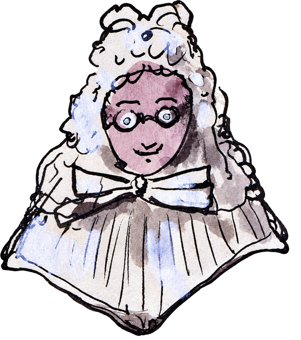

Doctor Ten-Times
after Molière, La Jalousie du Barbouillé, scene 2
Flourish: You look like an educated man, I'd like to ask you a question.
Dottore: First, you must not misprize me, I am not only educated, I am a doctor but not merely. I am a doctor one time, two times, three times, four times, five times, six times, seven times, eight times, nine times and ten times inclusive.
Flourish: Ah, indeed, the right person to speak...
Dottore: I am a doctor one time over because the foundation of all knowledge is unity, the number of which is the one in its own self, that number is adscititiously known as the first of the numbers, meaning that I am the doctor in the first place and therefore placed first among doctors. Two times, because the essence of perfect and plenary knowledge is the sensorium and the understanding, and as a doctor of the first order, I must be undisplanted in all of the both of the two, thence I am a doctor two times.
Flourish: Yes, I see ...
Dottore: Third, being of the first, and the second as well, I am therefore doctor three times over, syllogismos Barbara. The number three is, as Aristotle says, νομβερο περφεκτα, the perfect number, perfection is defined as full wholeness, and therefore thrice a doctor, I am holyful.
Flourish: Okay, dear Dottore ...
Dottore: Four times must be most pellucidly obvious to you, philosophy has its four branches, that of logic, ethic, physic, and metaphysic, indoctorated in Philosophy as I am, I am thus four ways ramified and verified in each, four times a doctor.
Flourish: I don't doubt, and I concede the ten. Now if I could just ...
Dottore: How many universals are there?
Flourish: Universal whats?
Dottore: You see, if I am going to render myself qua crystal clear, we needs most palestric elaboration. Five, there are five universals: genus, species, difference, property, and accident. Without these it is impossible to know anything, neither haecceitly nor quidditly, and I happen to know for myself my all five. Genus: Homo, species: Sapiens Sapiens, difference: in degree (Doctoratus in Philosophia), property: rented apartment and borrowed shed, and accidentally: I am Bolognese.
Flourish: I relent, complete the set.
Dottore: In the holy books, man is assigned a digit, the digit six. My doctoring was studied precisely on these sapiens to the second potenz, hence doctor six times. Six is, according to Euclides, τέλειος ἀριθμός, the perfect number, perfection is defined as consummate totality. Therefore, I am totally consummated.
Flourish: I await whatever mystery comes next.
Dottore: Seven, there are seven ages of man. I myself am a man both in propria persona and ad hominem, conative and cognitive. Doctor eight, doctorate, and of course, the number eight is, according to Augustine Hipponites, the numerus perfectionis, the perfect number, where perfection is defined as void's immediacy. Therefore, I am immediately void. Nine times, because there are nine tenths of the law, and doctor ten times, because ten supervenes itself in itself, it cannot be acquired or arrived at without all the numbers that came before it, one, two, three, four, five, six, seven, eight, nine and ten too, hence, I am a doctor and a dicker of doctors. Like the tree of Porphyry, I contain them all once again. Toto coelo, tutti culo, I am one time, two times, three times, four times, five times, six times, seven times, eight times, nine times, and ten times a doctor.
Flourish: What in the hell is this? I wanted to talk to an educated man and instead I have to hear some bozo counting his As, Bs, and Cs. Are there any eleven-times doctors I can talk to?